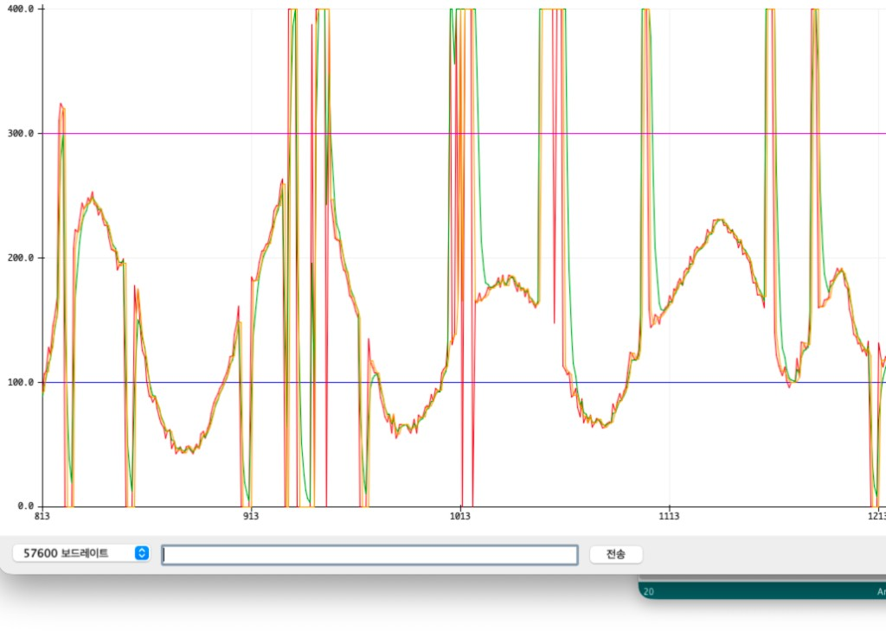
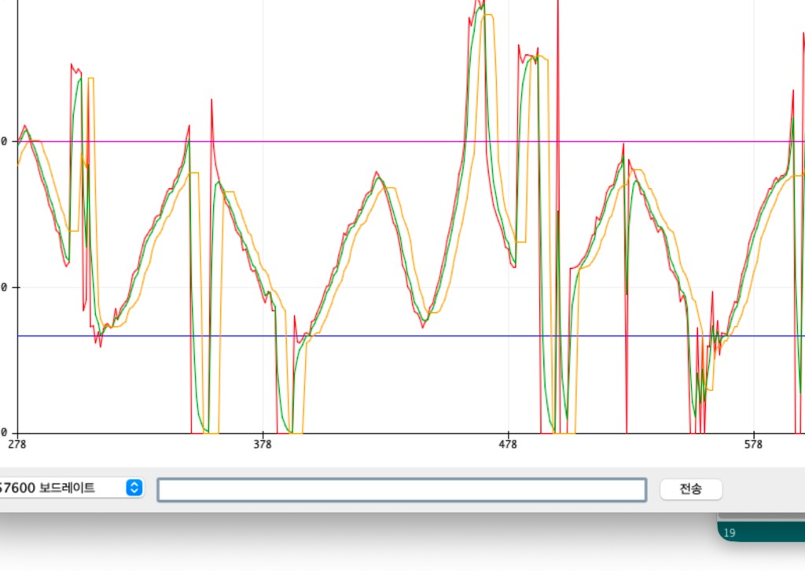
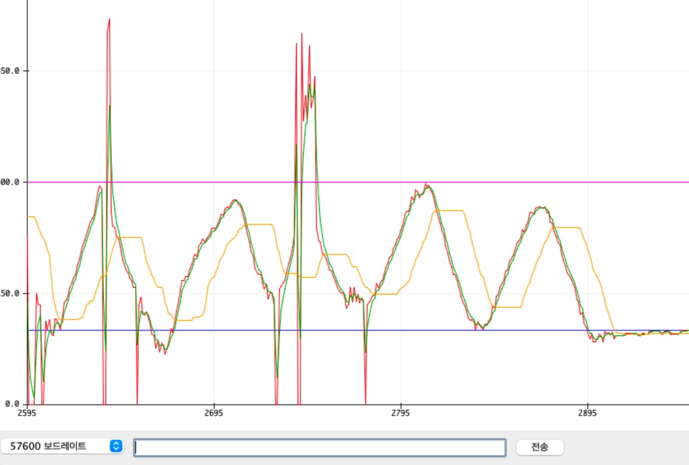

09_example_1을 재사용하되 직전 유효값 대체는 제거. timeout(0)이 버퍼에 그대로 들어간다.α·raw + (1-α)·이전 EMA (α=0.5).const int MEDIAN_NS[] = {3, 10, 30};
#define N_SELECT 1 // 1→N=3, 2→N=10, 3→N=30
출력: Min, raw, ema, median, Max (파랑 / 빨강 / 초록 / 주황 / 보라).
| N | 관찰 |
|---|---|
| 3 | 반응은 빠르다. timeout이 연속이면 median도 같이 튄다. |
| 10 | 한두 번 실패는 잘 막는다. 움직임은 N=3보다 느리다. |
| 30 | 스파이크 제거가 가장 강하다. 거리 변화는 늦게 보인다. |

파랑 Min · 빨강 raw · 초록 ema · 주황 median · 보라 Max

